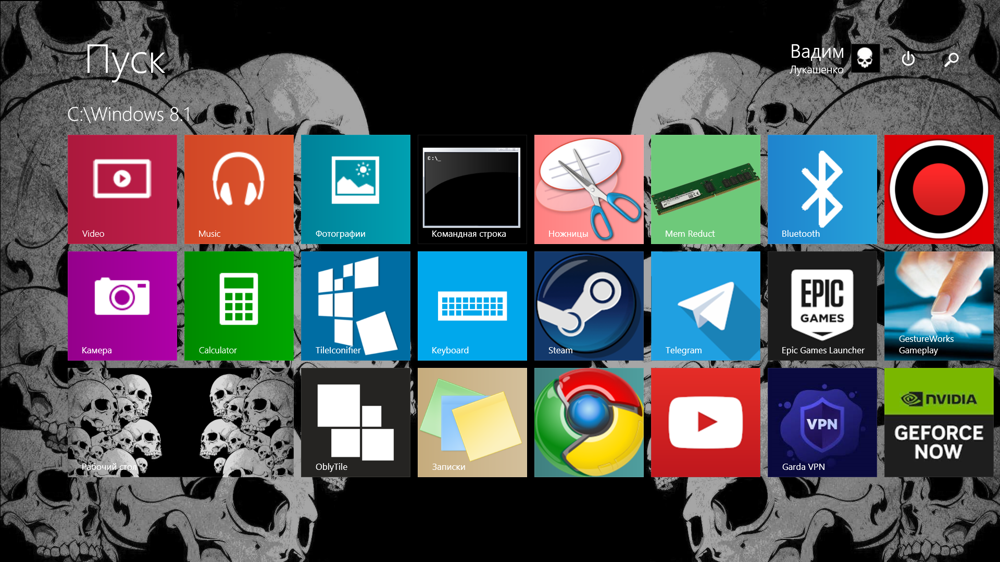
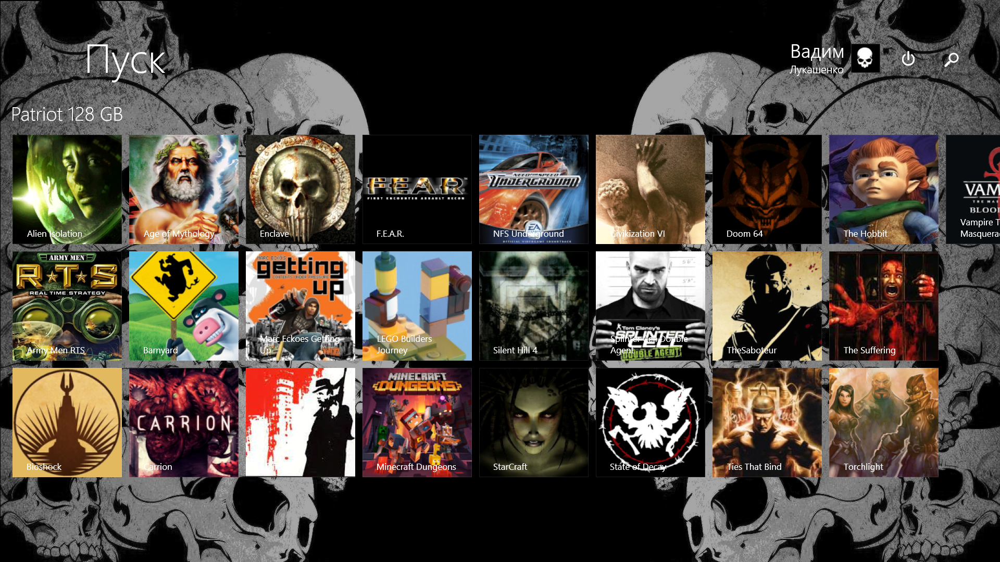
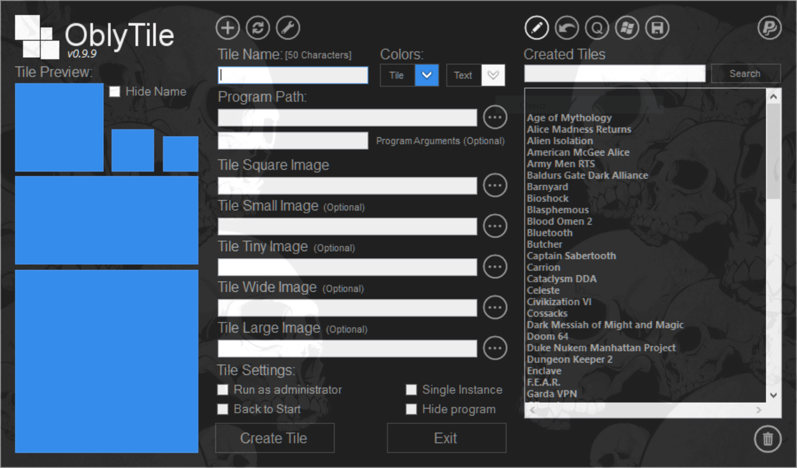
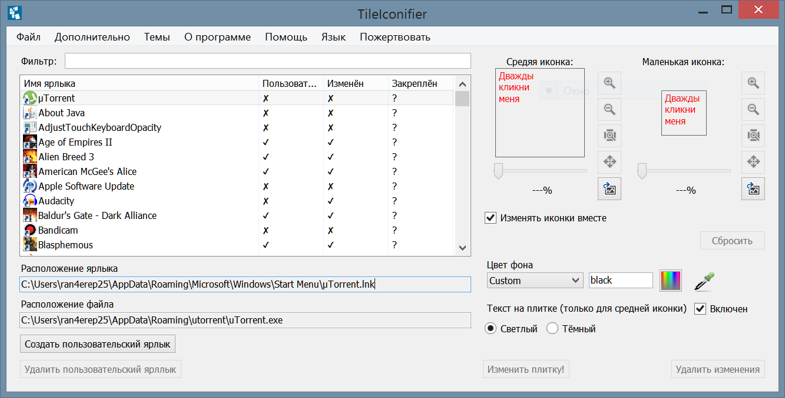

Делаем меню Пуск красивее
Вам, конечно же, никто не запрещает выкидывать на рабочий стол миллион иконок, однако этим вы ухудшаете его внешний вид и ваш рабочий стол превращается в "рабочую свалку", в которой трудно что-то отыскать. Ведь именно для организации ваших программ, файлов и папок Microsoft придумали меню Пуск. В этой статье я хочу рассказать вам как можно сделать что-то в стиле портативных консолей Nintendo Switch и Steam Deck. Подойдёт как Windows 8.1, так и Windows 10. Но на 8.1 смотрится красивее, так как там плитки более крупные. Ну и не забудьте включить полноэкранный режим меню Пуск на Windows 10, с ним всё это выглядит более целесообразно. На Windows 11 скорее всего ничего не получится, так как там решили вместо плиток сделать просто иконки. Вот так выглядит моё меню Пуск на Windows 8.1:
Согласитесь, достаточно симпатично. У меня несколько карт памяти с играми на них, поэтому я организовал плитки так, чтобы было понятно на какой карте памяти находится та или иная игра.
Для создания таких плиток нам понадобятся две программы, которые дополняют друг друг: OblyTile и TileIconifier. Могу ошибаться, но мне кажется что их делал один и тот же разработчик. OblyTile, наверное, был первой его программой и заточен больше под Windows 8.1, в то время как TileIconifier более заточен под Windows 10. Однако обе программы запускаются и работают на обоих операционных системах.
Скачать OblyTile
Скачать TileIconifier
Начнём с программы OblyTile, так как она проще в использовании. По сути всё что она может предложить так это создание плиток и управление уже созданными через эту программу плитками. У TileIconifier функционал немного шире и просто менее удобный интерфейс. Вот так выглядит окно OblyTile:
Чтобы создать плитку вам нужно:
- Написать имя программы/игры в поле Tile Name.
- Указать путь к исполняемому файлы программы/игры нажав на кнопку с тремя точками возле поля Program Path.
- При надобности указать аргументы запуска для исполняемого файла в поле Program Arguments (Optional).
- Выбрать изображение для плитки нажав на кнопку с тремя точками возле поля Tile Square Image. Все остальные вариации размеров изображения сгенерируются автоматически.
- Выбрать цвета фона плитки (если выбранное изображение имеет прозрачность), а также выбрать цвет текста названия плитки, нажав на кнопки со стрелочками возле Tile и Text соответственно.
- Поставить флажок возле Hide Name, если вы хотите чтобы название плитки не отображалось. Полезно, если на выбранной вами картинке уже есть название игры и тогда нет смысла его дублировать. Обратите внимание на игры F.E.A.R., NFS Underground, Carrion и Minecraft Dungeons на моём скриншоте. Хоть на их плитках внизу и написаны названия, но их можно было бы скрыть за ненадобностью.
- При надобности поставить галочку возле Run as administrator, если программа/игра должна запускаться от имени администратора.
Теперь давайте перейдём к программе TileIconifier, вот её окно:
В отличие от OblyTile, TileIconifier подгружает заранее все плитки из меню Пуск и вы можете сразу отредактировать любую из них. Так что можно просто закрепить в меню Пуск какой-либо ярлык и изменить ему иконку или же цвет фона плитки. TileIconifier умеет не только использовать изображения для плиток, но и иконки из *.exe файлов, либо любые другие в формате *.ico. В принципе вы можете просто подредактировать добавленный ярлык, изменив ему изображение, цвет фона, отключить текст на плитке с именем ярлыка или увеличить/уменьшить изображение или иконку и на этом всё. Однако в этой программе тоже можно создавать свои плитки, для этого нужно нажать в верхнем меню на пункт "Дополнительно" и выбрать там "Менеджер пользовательских ярлыков". Помимо плиток для *.exe файлов там можно создавать плитки как для любых папок, игр из вашей библиотеки Steam, приложений браузера Google Chrome, приложений из магазина Windows Store и даже просто для ссылок на сайты. Описывать процесс создания я не буду, так как там всё делается по аналогии с OblyTile. Напоследок хочу сказать почему tileIconifier подходит лучше для Windows 10, нежели для Windows 8.1. Всё потому что на 8.1 есть какой-то баг связанный с изображениями плиток. Не все они отображаются, пока не откадрируешь их при помощи кнопки с лупой и минусом внутри неё. Приходится отдалять изображение попиксельно и каждый раз проверять появилось ли оно на плитке в Пуске. И все они появляются с разной степенью отдалению. Некоторым достаточно всего один раз нажать на кнопку с лупой, другим три раза, третьим пять раз, а остальным так вообще раз двадцать, пока изображение не станет настолько маленьким, что там ничего нельзя разобрать. В Windows 10 такого попросту не наблюдается, да и на Windows 8.1 через OblyTile тоже.